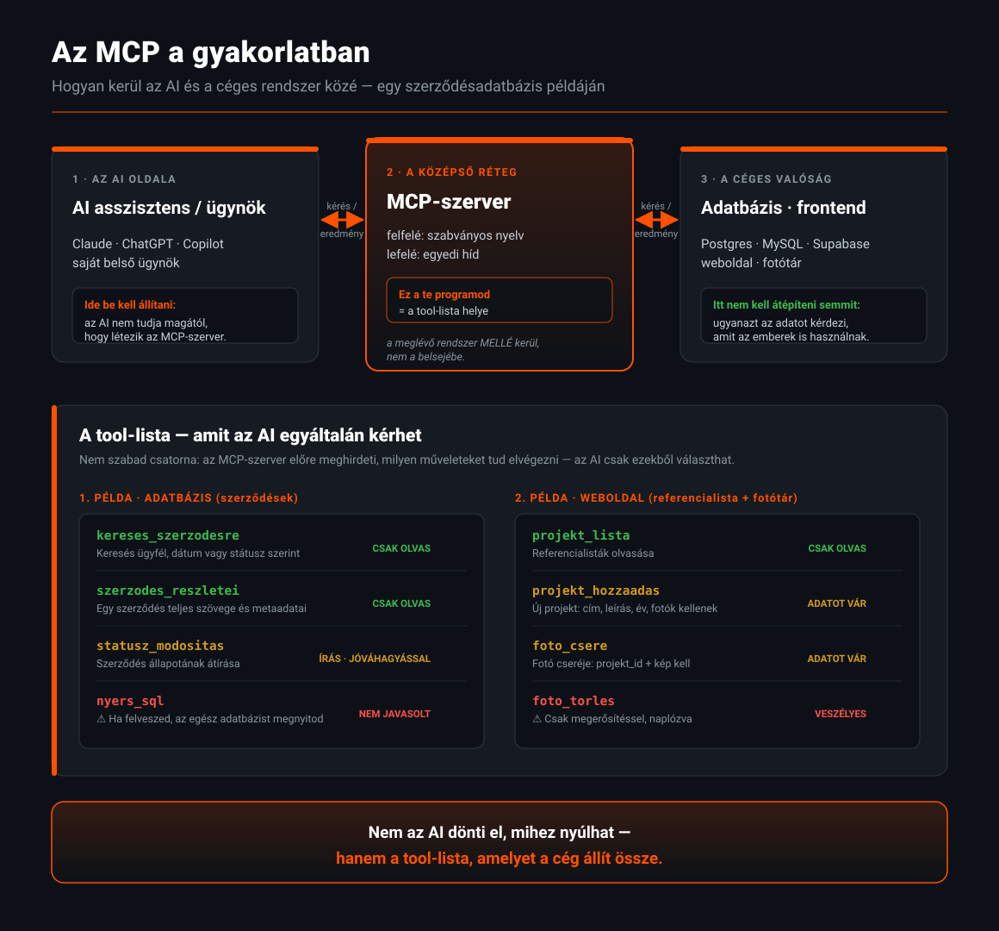

A bevezetés akkor válik kézzelfoghatóvá, amikor a saját rendszereinket kell bekötni. Ez az oldal négy gyakorlati témát jár körül: egyedi rendszerek, MCP, a keletkező fájlok sorsa és az ügynökök működése.
A legtöbb cégnél a tudás nem egyedi fejlesztésben él, hanem kész, széles körben használt rendszerekben. Ezekhez a szolgáltatók kész connectorokat adnak — nincs fejlesztés, csak engedélyezés.
Az enterprise AI bevezetésének első lépése szinte mindig ugyanaz: összekötni azt a néhány rendszert, ahol a mindennapi munka és a tudás ténylegesen él. Erre a nagy szolgáltatók előre megírt, karbantartott integrációkat kínálnak. A cégnek nem kell fejlesztenie — bekapcsolja, beállítja a jogosultságokat, és az AI már onnan is dolgozik.
Ökölszabály a sorrendhez: először a kész connectorokkal kösd be azt a néhány rendszert, ahol a legtöbb tudás van (fájltárak, e-mail, Teams/Slack, CRM). Csak utána foglalkozz az egyedi rendszerekkel — ott már MCP-fejlesztés kell.
Mi van akkor, ha a tudás egy saját fejlesztésű rendszerben, szerződésadatbázisban vagy belső ügyviteli programban él?
A jó hír: az AI nem igényel „nagynevű” szoftvert. Az enterprise rendszerek ugyanúgy csatlakoznak egy belső fejlesztésű adatbázishoz, mint egy SharePointhoz — az út csak hosszabb, mert nincs kész connector. A lényeg, hogy a belső rendszer valamilyen programozható felületen (API) keresztül hozzáférhető legyen.
Tegyük fel, hogy van egy saját fejlesztésű szerződésnyilvántartó. Így kötöd be az AI-hoz:
A belső rendszer kap egy API-t (alkalmazásprogramozási felület) — vagy ha már van, dokumentálni kell. Ez az a „konnektor”, amelyen a külvilág adatot kérhet. Ha nincs, ezt kell elsőként megépíteni (ez a legnagyobb, de nem áthidalhatatlan feladat).
A csatlakozó úgy lép be, mint egy felhasználó: megadott azonosító, jogosultsági szint, és fontos: a lekérdezés a hívó munkatárs nevében történjen, ne egy mindenható szuperfiókkal (különben mindenki mindent lát).
Két út van: (a) írunk egy MCP-szervert, amely a szabványos „dugón” keresztül kínálja a szerződéskeresést — így több AI is használhatja; vagy (b) a választott szolgáltatóhoz írunk egyéni connectort — gyorsabb, de platformhoz köt.
A szerződésszöveg bekerül az indexbe (vagy federáltan érkezik). Ehhez szövegkinyerés kell: a rendszer tudja olvasni a PDF/DOCX/HTML tartalmat, és darabolni a kereséshez.
A szerződéshez tartozó adatok (ügyfél, dátum, titkosítási szint, ki láthatja) át kell, hogy kerüljenek — különben az AI nem tudja szűrni, és kiszivárogtathatja a bizalmas iratot.
Próbakérdésekkel ellenőrizzük: jól talál-e, jól idéz-e, és tényleg nem adja-e ki azt, amit nem szabad. Ez a lépés nem kihagyható.
Ki kap hozzáférést, ki az admin, hogyan naplózzák a kéréseket. A működés közben derül ki, hol kell finomítani a keresést.
A lényeg: nem az számít, hogy a rendszer ismert-e — hanem hogy van-e rajta API és van-e jogosultsági modellje. Ha a válasz mindkettőre igen, beköthető. Ha nincs, akkor első feladat az API megépítése.
Reális döntés: maradjon-e a meglévő, régi belső rendszer, vagy építsünk újat AI-segítséggel?
Jellemző út: MCP-szerver vagy egyéni connector a meglévő rendszer elé — a rendszer maga nem változik.
Vigyázat: a vibe coding remek prototípusra és belső eszközre, de kritikus adatbázisra vagy pénzügyi rendszerre nem — ott a biztonság, a jogosultság és a visszaállíthatóság emberi tervezést igényel.
Mi az, hol van, mit szabályoz — és mit kell kérdezni attól, aki MCP-alapú megoldást ajánl. Végig egy szerződésadatbázis példáján.
Az MCP (Model Context Protocol) egy szabvány, amely leírja, hogyan kérdezhet egy AI egy külső rendszert. A lényeg döntéshozóknak: az AI felé egységes, kiszámítható felületet ad, a cég rendszere felé viszont egyedi hidat kell építeni. Az MCP nem termék, hanem csatlakozási szabály — olyan, mint a konnektorok szabványa: az áramforrás és a gép közti csatlakozás mindenkinél ugyanúgy néz ki, de a gép belseje minden cégnél más.

Claude, ChatGPT, Copilot, saját ügynök. Ez indítja a kérést. Az AI nem tudja magától, hogy létezik az MCP — ezt neki meg kell adni, be kell állítani (a kliensben hozzárendeljük a szervert). Ezután az AI már a szabványos „dugón” keresztül kérdez.
Egy külön kis szolgáltatás, amely a meglévő rendszered mellé kerül — nem az adatbázis belsejébe, nem a frontend kódjába. Ő a tolmács: felfelé szabványos nyelven beszél, lefelé a te rendszeredhez szól. Ez az a rész, amit meg kell építeni (vagy megépíttetni az ajánlattevővel).
Ahol az adat valójában él: Postgres, MySQL, Supabase, a meglévő webes felület, a referencia-lista, a fotótár. Itt nem kell semmit átépíteni — az MCP-szerver ugyanazt az adatot kérdezi, amit az emberek is használnak.
Felfelé szabvány · lefelé egyedi — ezt a két végét köti össze az MCP-szerver.
Amit ez jelent döntéshozóként: nem kell sem a Postgres adatbázist, sem a frontend kódját átírni, hogy az AI hozzáférjen. Nem kell API-t beépíteni a meglévő rendszerbe. Az MCP-szerver elé kerül, és a szabályokat egy helyen, benne tartod. Az MCP lényegében az AI világának USB-C csatlakozója: egy szabványos dugó, sokféle rendszerhez.
Az MCP-szerver nem fogad el bármit. Induláskor meghirdeti a saját tool-listáját (eszközkatalógusát): milyen mûveleteket tud egyáltalán elvégezni, milyen névvel, milyen bemeneti adatokat vár. Az AI kizárólag ebből a listából választhat — mást nem tud kérni.
1. példa — adatbázis (szerződésadatbázis): itt a tool-lista azt szabja meg, milyen lekérdezéseket futtathat az AI, és mit állíthat be.
2. példa — weboldal (referencialista + fotótár): itt a tool-lista azt szabja meg, mit módosíthat az AI, és milyen adatokat kell küldenie hozzá.
cim, leiras, ev; opcionális: fotok[], ugyfel, cimkek[]projekt_id, kep; opcionális: sorrend, alt_szovegPélda: a munkatárs az AI-tól kéri: „Vegyél fel egy új projektet a referencialistába.”
Az AI megérti, hogy ez egy projekthozzáadás. Megnézi, van-e erre eszköz a tool-listán — van: projekt_hozzaadas.
A tool sémája megmondja, mi kell: cím, leírás, év. Ha a felhasználó nem adta meg mindet, az AI visszakérdez — nem taksál.
Az AI elküldi: {cim: „...”, leiras: „...”, ev: 2026, fotok: [...]}. Ez már szabványos MCP-hívás.
A szerver a te kódod: ellenőrzi a jogosultságot, megnézi, hogy minden kötelező mező megvan-e, majd elvégzi a mûveletet — pl. beilleszt egy sort az adatbázisba, és elmenti a fotókat a megfelelő helyre.
A szerver visszaadja az eredményt („sikeres, projekt ID: 41”). A mûvelet naplóba kerül: ki, mikor, mit módosított. Ez az, ami utólag visszakereshetővé teszi.
„Felvettem a projektet a listára. Ha szeretnéd, hozzáadhatok fotókat is.” — a felhasználó látja, mi történt.
Ezt nem találja ki: azt a fejlesztő írja meg, aki az MCP-szervert készíti. Minden egyes toolhoz tartozik egy konkrét programkód, amely leírja, mi történik a beérkező adattal. Tehát:
projekt_hozzaadas……akkor a kód: új sor a projekt-táblába, a fotók feltöltése a tárhelyre, a kapcsolatok beállítása. Ezt a lépést a fejlesztő programozza meg.
…akkor a szerver elutasítja és hibaüzenetet ad vissza. Az AI ezt megkapja, és vagy javítja, vagy jelzi a felhasználónak. A szabályt a szerver kódja érvényesíti.
…akkor a szerver a hívó személye alapján dönt: engedi vagy elutasítja. Nem az AI dönt erről. Ez a legfontosabb biztonsági pont.
A leggyakoribb gyakorlati kérdés: ha az AI-val készíttetek egy dokumentumot, az hol landol, és ki fér hozzá?
Az AI alapból nem „ment el” fájlokat a gépedre észrevétlenül. A fájl ott keletkezik, ahol a beszélgetést folytatod, és onnan továbbítódik a cég arra kijelölt tárolójába — vagy a beszélgetésben marad, ha nem rendeltél tárolót. A helyes céges működéshez előre meg kell szabni a célmappát.
Célügynökök (pl. szerződésíró, szerződésellenőrző) működése a szervezetben.
Az „ügynök” (agent) nem önálló lény, hanem egy beállított AI-szerep: utasítások + hozzáférés a tudáshoz + engedélyezett eszközök. A szervezetben él, ott, ahol a platform adminisztrátora létrehozza — és onnantól a dolgozók a szokásos felületükön (ChatGPT, Claude, Copilot, Teams, belső portál) hívhatják meg.
Feladata: feltölteni a szerződéstervezetet, és kiszűrni a kockázatos kitételeket, hiányzó szakaszokat, eltérő felelősségi pontokat — a cég korábbi szerződéseihez és sablonjaihoz mérve.
Feladata: a jóváhagyott sablonból és az ügyféladatokból első változatú szerződést készíteni, kitöltött mezőkkel és a cég standard nyelvezetével.
Feladata: új munkatárs első hetének végigvezetése — szükséges iratok, belső szabályok, hozzáférési kérések, gyakori kérdések megválaszolása a céges tudásbázisból.
Feladata: egy ügyfél kéréséből kiindulva árajánlat-vázlatot és ügyfél-specifikus anyagot összeállítani a korábbi, sikeres ajánlatok mintájára.
A platformtól függ, de mindegyiknél a dolgozó szokásos felületén keresztül: a ChatGPT-ben @-említéssel vagy a tools-menüből, Claude-ban a dedikált projektből, Copilotnál a Copilot-felületről vagy Teams-ből, Google-nél a Gemini Enterprise appból. A lényeg: nem külön programot kell megnyitni, hanem a megszokott helyen előkerül az ügynök.
Az output ugyanoda kerül, mint bármely más generált fájl: a kijelölt célmappába a cég tárolójában, a szokásos jogosultságokkal és verziókövetéssel. Ha döntést igényel (pl. aláírás), az emberhez kerül jóváhagyásra — az ügynök javasol, nem dönt helyetted.
Egy jól működő cégnél van egy nyilvántartás: mely ügynökök elérhetők, mit tudnak, ki a felelős gazdájuk, és ki jogosult használni. Ez vagy a platform saját lista-nézete (pl. Copilot Studio, ChatGPT workspace agents, Gemini agent gallery), vagy egy belső katalógus. Az adminisztrátor hozza létre és osztja meg — a dolgozó pedig a listából választ.
Mindig a szervezet és a kijelölt gazda (owner) — nem az AI szolgáltató és nem a modell. Ezért fontos, hogy minden ügynöknek legyen nevesített felelőse, és időnként felülvizsgálják: pontos-e, naprakész-e, nem ad-e ki érzékeny adatot. Az ügynök beállítása, a hozzáférései és a működése a cég felelőssége.
Igen — ez a célügynök lényege. Kap egy szűk tudásbázist (csak a jogi mappa), egy szigorú utasítást („csak a jogi anyagokból dolgozz”), és csak a szükséges eszközöket. Minél szűkebb a hatókör, annál megbízhatóbb és biztonságosabb. Ugyanígy külön ügynök készíthető a HR, pénzügy vagy a belső it-helpdesk számára — mindegyik a saját tudására és jogosultságaira szabva.